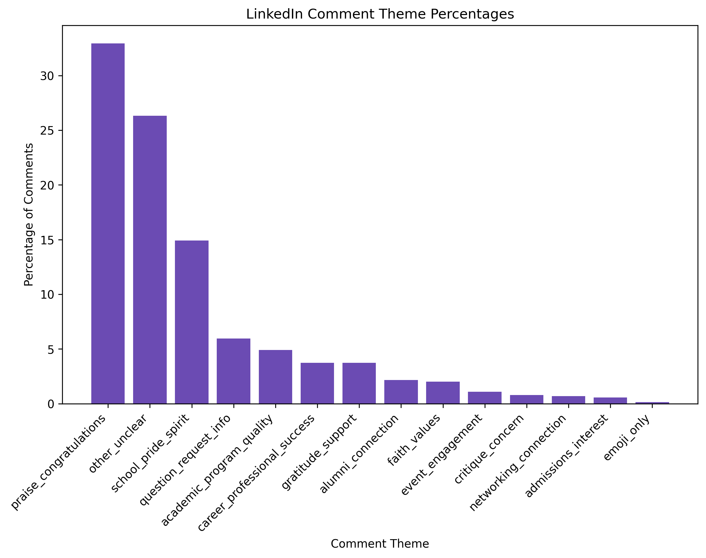

LinkedIn Post Themes
This chart shows which themes appeared most often in the LinkedIn posts. It helped me see how schools use LinkedIn to connect their message to professional success, reputation, alumni, employers, and career value.

Platform Analysis
LinkedIn is where schools sound the most professional. I used this page to look at both LinkedIn posts and comments to see how schools talk about success, rankings, alumni, employers, and career value.
LinkedIn posts show how schools present themselves in a professional space. These posts usually focus on achievement, rankings, faculty, alumni success, employer connections, and leadership.
LinkedIn comments helped me see how people respond to school content. A lot of the responses were short and supportive, like congratulations, alumni pride, or quick reactions to someone’s success.
Looking at both posts and comments helped me compare what schools choose to share with how people react to those messages.
This chart shows which themes appeared most often in the LinkedIn posts. It helped me see how schools use LinkedIn to connect their message to professional success, reputation, alumni, employers, and career value.
This chart shows which themes appeared most often in the LinkedIn comments. It helped me see how audiences respond to higher education content in a more professional space.

The LinkedIn data showed me that this platform works differently from Instagram. Instagram feels more visual and personal, while LinkedIn focuses more on credibility, professional success, alumni, rankings, and employer connections. The comments also showed that people often respond in quick, supportive ways when schools post about achievements and career-related news.